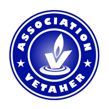

Accéder aux liens
Aperçu à valider · les profils existants sont inchangés

ASSOCIATION
Vetaher
Actions et services
Soutenir Vetaher
Découvrir les actions de Vetaher
Demander une aide alimentaire
Donner des vêtements
Retrait à domicile · compte requis
Cachérisation de la vaisselle
Hévra Kadicha
Gueniza
Urgence enterrement : vidéo
Instagram
Facebook